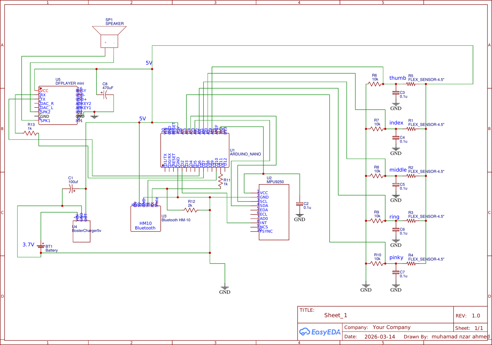

Getting the parts at all
Most components were not sold in Duhok, so they were ordered from Baghdad. Every damaged part meant waiting again, which shaped how carefully we handled the build.
University of Duhok · College of Engineering · Biomedical Engineering
A wearable glove that reads the shape of your hand and turns it into words — written on a phone, and spoken out loud.
Hello
Silav
Flex sensor reading
Simplified illustration of finger extension per sign — not recorded sensor output.
Exhibited at MEDICO 2026, Erbil · In academic partnership with THM, Germany
Demonstration video
Paste the YouTube embed here — see the comment in index.html.
A full run through Word Mode and Letter Mode, with audio output.
A deaf or speech-impaired person can sign fluently and still not be understood, because the person across from them never learned to sign. That happens at a hospital reception, in a classroom, at a government office — ordinary places, every day.
Interpreters are not always available and not always wanted. The gap is usually small: a handful of words, said quickly, to someone who only needs to understand this once. We wanted to close that gap with something a person can simply wear.
The signal starts as a bend in a finger and ends as a word in two places at once.
Fingers bend. The wrist turns. Both carry meaning.
Each flex sensor changes resistance as the finger curls. The MPU9250 reports how the hand is tilted and how it is moving.
Every sensor value is checked against a calibrated range. When all of them fall inside the range for one gesture, that gesture is recognized.
Seen — HM-10 Bluetooth Low Energy sends the text to a smartphone.
Heard — a DFPlayer Mini plays the matching audio file through a speaker.
Hello, Stop and Wait are all made with an open hand. To five flex sensors they are the same reading. The MPU9250 is what separates them — orientation and motion carry the difference that the fingers do not.
The glove switches between modes with a gesture of its own, so the hand never has to leave the conversation to press something. A further gesture clears the text.
| English | Kurdish | Meaning |
|---|---|---|
| Hello | Silav | Greeting |
| Yes | Bele | Affirmative |
| No | Nexer | Negative |
| Stop | Raweste | Request to stop |
| Wait | Cavere Be | Request to wait |
| How are you? | Çawa yî? | Asking after someone |
Six American Sign Language letters, shown in sequence so short words can be spelled.
Everything except the sensors sits in a clear enclosure strapped to the forearm.
| Component | What it does |
|---|---|
| Arduino Nano | Reads every sensor and runs the recognition logic |
| Flex sensor × 5 (5.59 cm) | One per finger — resistance changes with bend angle |
| MPU9250 (9-axis) | Hand orientation and acceleration, over I2C |
| HM-10 Bluetooth LE | Sends the recognized text to a smartphone |
| DFPlayer Mini + speaker | Speaks the recognized word aloud |
| MicroSD card | Holds the audio files for the DFPlayer |
| 10 kΩ resistor × 5 | Voltage dividers so the Nano can read the flex sensors |
| Li-ion battery (3.7 V, 700 mAh) | Around seven hours of use per charge |
| MT3608 boost converter | Steps the battery up to a steady 5 V |
| Power switch, USB-C port | On/off and charging |
| Right-hand glove | Carries the sensors and the wiring |

Most components were not sold in Duhok, so they were ordered from Baghdad. Every damaged part meant waiting again, which shaped how carefully we handled the build.
The thumb sensor sat and bent differently from the other four and never matched their readings. It ended up with its own separate calibration.
Small changes in hand position moved the sensor values. Settling on ranges that held up across repeated attempts took far more testing than writing the code did.
The glove and the enclosure went through several revisions before the sensors sat in the right places and the whole thing was still comfortable to wear.
We have not measured a formal recognition accuracy figure, so we are not claiming one.
Abdulqader Masood
Fourth-year Biomedical Engineering
Zaid Mahdi
Fourth-year Biomedical Engineering
Dr. Soleen Jaladat Al-Sofi
Supervisor — the project was her suggestion